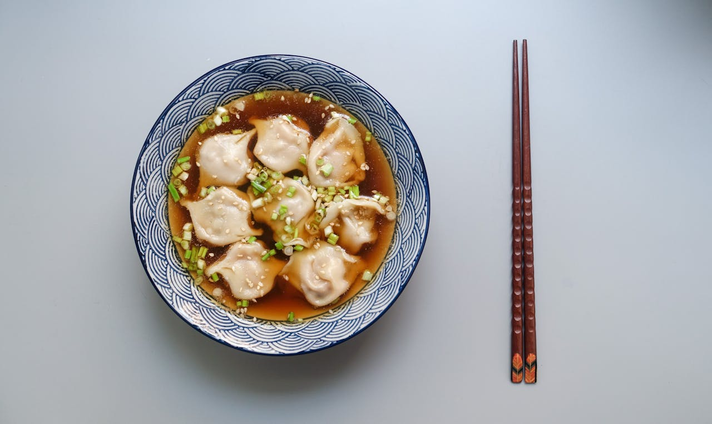

Homeß
Dumplings
"This is the best dumplings I have ever eaten! And it was so easy to make!

If you're like me, I love asian food and dumplings are the absolute epitome of what makes asian food
food so good to me. It is warm ,juicy, and full of flavors. You don't have to be a cook to learn this simple recipe!
Ingredients
- dumpling wrappers
- eggs
- ground pork
- soy sauce
- green onion
Steps
- brown the meat in a pan with a touch of oil
- add your green onion. Salt to taste
- cool the mixture and fill your dumplings
- boil dumplings
- finish with soy sauce and enjoy!